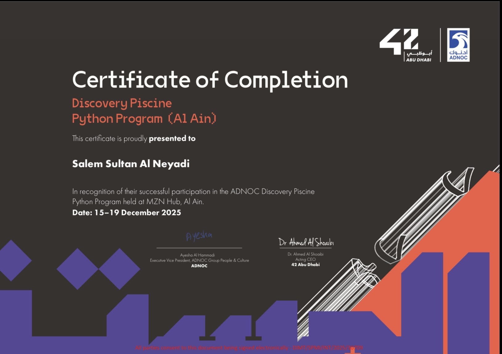

Khalifa Fund (Al Ain)
Coding & Innovation
Through this specialized initiative in Al Ain, I gained hands-on experience in software development and computational thinking. The program focused on the fundamentals of coding and the logic behind building efficient digital systems, allowing me to translate my mathematical background into functional technology. This experience solidified my ability to navigate the tech landscape, teaching me how to leverage programming as a tool for economic contribution within the UAE’s innovation ecosystem.
